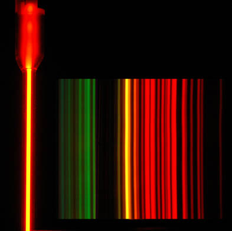

Atomic Spectra
|  |
|


This is an attempt to give a reasonable accurate picture of the appearance of the neon spectrum, but both the images are composite images. The image below is composed of segments of three photographs to make the yellow and green lines more visible along with the much brighter red lines. Then the image below was reduced and superimposed on the image above, because with the exposure reasonable for the bright tube, only the red lines were visible on the photograph.
|
Some of the visible lines of neon: |
| HyperPhysics***** Quantum Physics | R Nave |